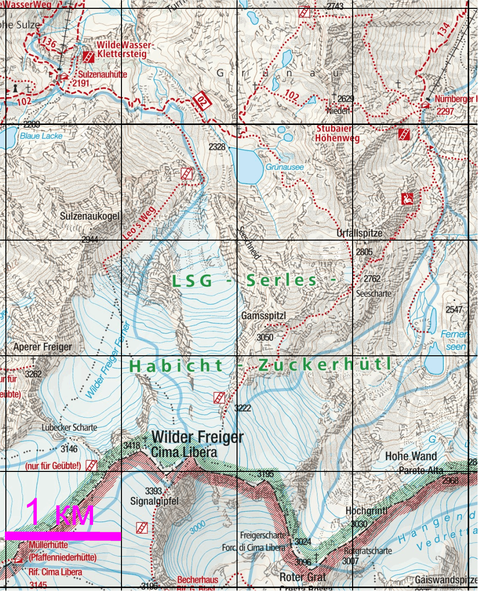
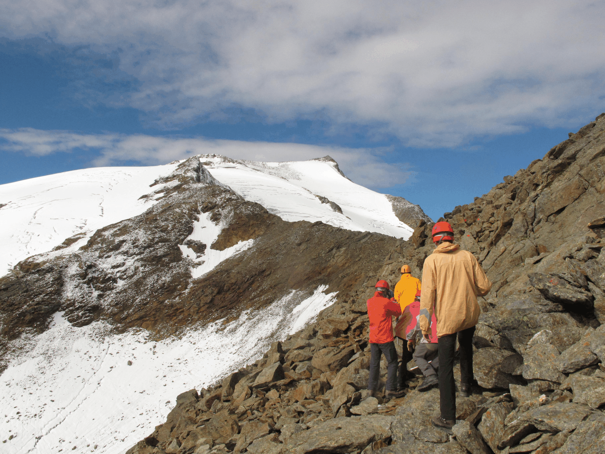
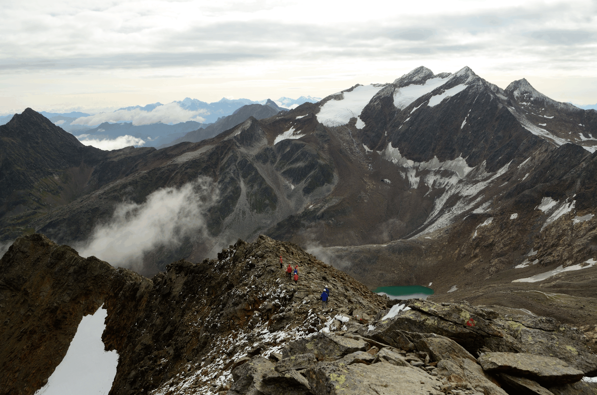

Вершина Gamsspitzl
Gamsspitzl (3050 м) – вершина а Штубайских Альпах , расположенная на северном отроге вершины Signalgipfel, которая является одной из ключевых вершин главного водораздела (рис. 1). Восточный склон - скально осыпной, крутизной до 45 градусов, западный - отвесная скала высотой 200 м. На север и на юг от вершины пролегает острый гребень отрога, непроходимый без специального снаряжения. Сама вершина обозначена крестом и является отличной видовой точкой, откуда открывается вид на соседние долины, а так же вершины Feuerstein, Wilder Freiger и ледник Wilder Freiger Ferner. Имеется достаточно широкая площадка для безопасного размещения группы из 10 человек. Места для бивуака нет.

Рис. 1. Карта района издaтельства Kompass.
Забраться на вершину можно по маркированной тропе, отходящей от основной тропы, которая в свою очередь идет от хижины Nürnberger Hütte на вершину Wilder Freiger мимо перевала Seescharte. Около развилки есть указатель, нарисованный на камне. От места разветвления нужно набрать 100 м до вершины Gamsspitzl. От Nürnberger Hütte – 750 м. Тропа на вершину хорошо маркирована и не представляет особой трудности (″черная″ тропа по австрийской классификации троп), проходится без применения специального снаряжения. На начальном этапе подъема тропа идет серпантином по скально-осыпному склону (рис. 2). Затем тропа выходит на гребень хребта (рис. 3). Ферраты отсутствуют – они там и не нужны. Других вариантов безопасно забраться на вершину нет.

Рис. 2. Тропа, ведущая на вер. Gammspitzl.

Рис. 3. Северный хребет Gamssplitzl (вид с вершины).
При прохождении маршрута группа заночевала недалеко от места разветвления основной тропы. И в начале следующего дня забралась на вершину, потратив на подъем, спуск, и фотографирование на вершине около 2 часов.